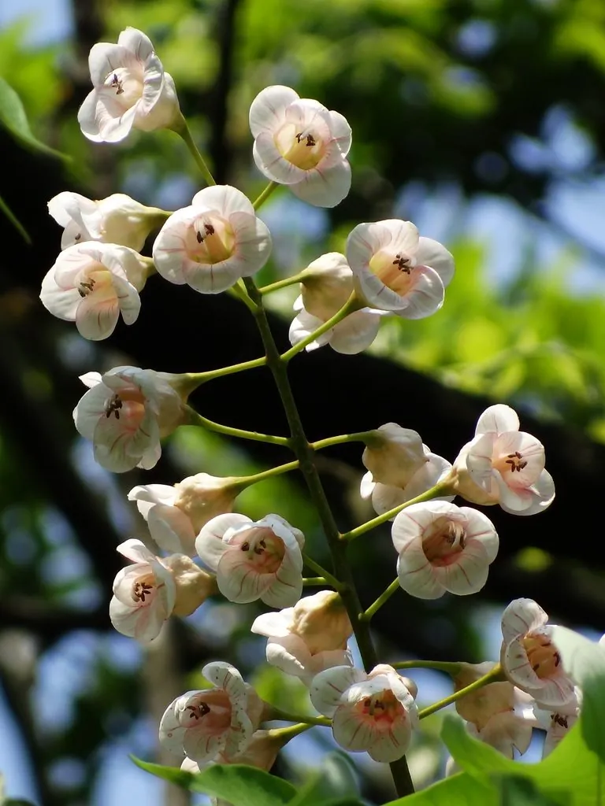

乔木 · 植物界
伯乐树 Bretschneidera sinensis

叠珠树科伯乐树属落叶乔木，中国特有的单型科植物，花大而粉红、花序如钟，是珍贵的孑遗树种与国家一级保护植物。
- 分类
- 门被子植物门纲木兰纲目十字花目科叠珠树科属伯乐树属
- 栖息环境
- 海拔 500–1700 米的山谷、溪边与常绿阔叶林下，喜温暖湿润半阴
- 地理分布
- 中国江西、湖南、广东、广西、云南、贵州、浙江、福建、四川等地，为中国特有
- 保护级别
- 国家一级重点保护野生植物；IUCN 暂无评估
物种志
伯乐树为叠珠树科伯乐树属落叶乔木，高十至二十米，树皮灰白色、平滑，小枝粗壮。奇数羽状复叶，小叶七至十五片，长卵形至倒卵形，边缘全缘，表面深绿。花大，粉红色，组成顶生的总状花序，花萼钟状，花瓣五枚，花期四至五月；蒴果木质，近球形，成熟时红褐色并三瓣开裂，果期九至十月。
伯乐树是中国特有的单型科植物，分布于江西、湖南、广东、广西、云南、贵州、浙江、福建、四川等地，多生于海拔五百至一千七百米的山谷、溪边和常绿阔叶林中。它喜温暖湿润和半阴环境，适宜土层深厚、排水良好的酸性黄壤。花大色艳，可作庭园观赏树；木材纹理直，可制器具。由于分布零散、天然更新困难，野生植株数量稀少，被列为国家一级重点保护野生植物。
形态与习性
- 株高10–20 m，树皮灰白色
- 花期4–5 月，总状花序粉红色
- 果期9–10 月，蒴果木质三瓣裂
- 光照喜半阴，幼树忌强光
- 水分喜湿润，常生于溪谷旁
- 土壤深厚肥沃的酸性黄壤
- 主要用途庭园观赏，木材制器具
趣味知识
- 伯乐树科仅伯乐树一种，是研究被子植物系统演化的重要材料。
- 它的花萼呈钟状，因此又名钟萼木，花序盛开时粉红一片。
- 伯乐树天然结实率低、种子萌发困难，野生种群十分稀少。